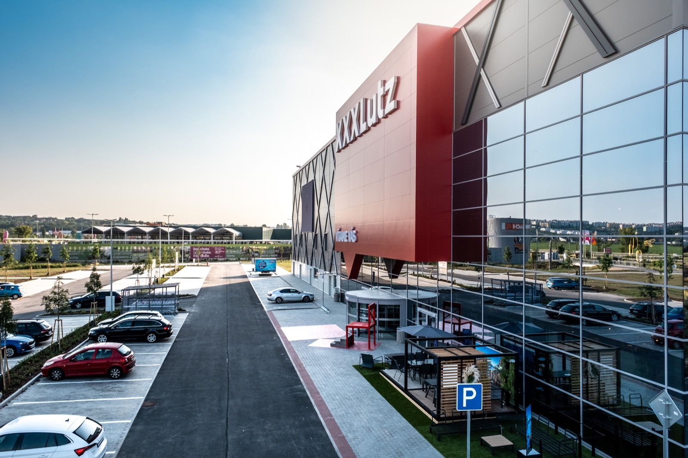
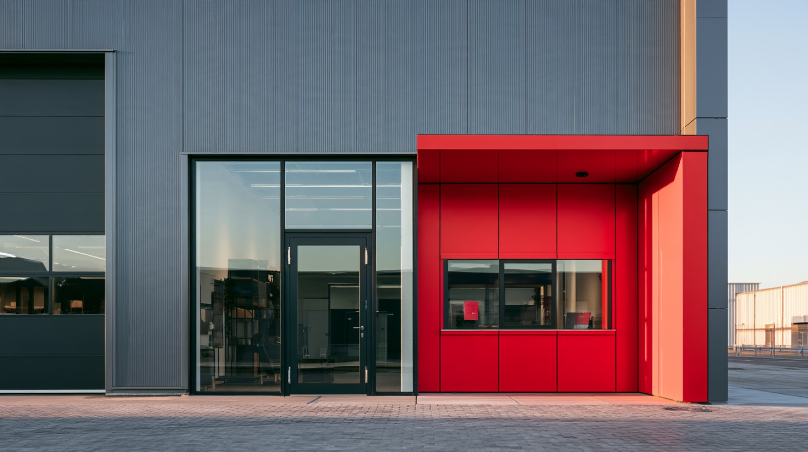
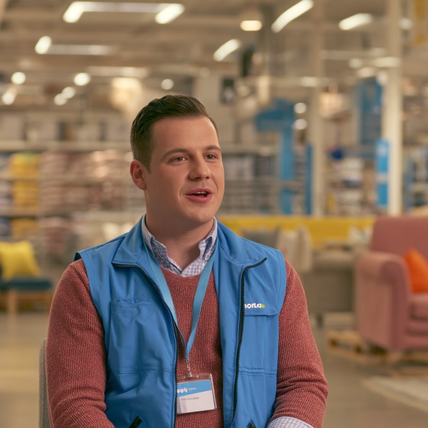

El problema
no era el delivery
Usando Service Design para conectar la experiencia online
con tiendas físicas en 16 mercados
Usando Service Design para conectar la experiencia online
con tiendas físicas en 16 mercados
En XXXLutz, comprar un mueble online disparaba las mismas dudas en 16 mercados: ¿cuándo me llegaría a casa?, ¿lo puedo retirar?, ¿cuánto cuesta el envío? Esas preguntas sin resolver generaban llamados a soporte, usuarios confundidos y empleados de tienda frustrados.

Fui lead designer del proyecto en el equipo Assess durante 6 meses, trabajando con producto e ingeniería en los 16 mercados de XXXLutz.
Mapeé el servicio de punta a punta: entrega, reserva, Click & Collect y soporte.
Rediseñé cómo se comunica la disponibilidad y la información de envío en la página de producto.
Organicé y lideré un Design Sprint con producto e ingeniería para alinear a todo el equipo.

Lo que empezó como una mejora de la información de delivery rápidamente reveló un problema mayor.
Organicé y facilité un Design Sprint para mapear el servicio completo: delivery, reservas, Click & Collect, marketplace, tiendas, Customer Support y los sistemas que los conectaban.
La Product Detail Page era solo el frontstage. La mayor parte de la complejidad vivía en el backstage.
La información estaba redactada desde la perspectiva del sistema, no la del usuario: técnicamente correcta, pero poco útil para decidir. Conceptos como Online Only, los costes de envío o las reservas tenían sentido desde la lógica interna, pero llevaban a conclusiones equivocadas para las personas.
En lugar de explicar mejor el sistema, rediseñamos la experiencia alrededor de las decisiones que los usuarios realmente intentaban tomar.
Ilustración o diagrama del glosario compartido / traducciones con IA.
Cada equipo usaba términos distintos para lo mismo, generando inconsistencias entre mercados. Los traductores generaban wording aislado de su uso, sin entender el contexto. El wording era un caos.
Armé un glosario compartido y construí un AI assistant de traducción y UX writing que traduce y mantiene la consistencia en 13 idiomas.
En vez de preguntarnos cómo explicar el sistema, empezamos a preguntarnos qué decisión estaba tratando de tomar el usuario. Esa idea reordenó reservas, entregas, promociones y disponibilidad en toda la experiencia.

La solución se desplegó en todos los mercados de XXXLutz. Pero el mayor resultado fue otro: conseguimos que Producto, Ingeniería y Negocio compartieran una misma comprensión del servicio. Los stakeholders más escépticos terminaron siendo quienes más la impulsaron, y un servicio que se sentía fragmentado empezó a comportarse como una experiencia coherente.
Reportado en surveys y tests de usabilidad.
En todo lo relacionado a delivery, Click & Collect y reservas.
Un problema de wording terminó siendo un rediseño completo del servicio.